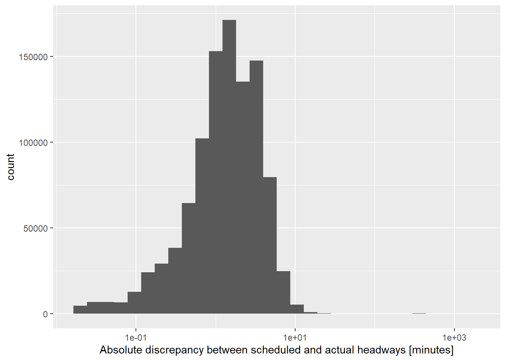
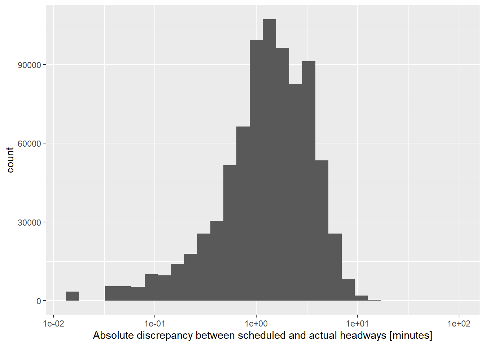

Chapter 3 Methods
We modified a dataset provided by Utah Transit Authority (UTA) to verify the affects of several TSP strategies on headway variation of the UVX BRT system. This BRT system is a 10 mile line between Provo and Orem and was open for public use as of January 9, 2019. The demographics of this area are particularly marked by the presence of two large universities in the area, Brigham Young University in Provo and Utah Valley University in Orem. With over 30,000 students in enrolled in each respective institution each year, a great deal of traffic demand is created between students traveling to and from school, especially considering the fact that housing and job demands are driven by students. For this reason there is a decent amount of UVU students who live in Provo, and the need to make the Provo-Orem commute causes considerable delay during peak hours. In conjunction with servicing other demographics of the population, servicing student needs was a large factor in the decision to implement a BRT system in this area.
3.1 Data
We created an analysis dataset from UTA’s raw dataset that included timepoint data for all UVX BRT trips from January 2, 2019 to December 30, 2019. The dataset was cleaned and reoriented to reflect data that would be useful in analyzing the distribution of headways over different times of day, locations, and TSP thresholds. We retained within the dataset routes, trips, stops, and vehicles. We simplified the format of these datapoints and created a new variable to hold information regarding reliability, or the difference between scheduled departures and actual departures. we also changed the level descriptions of the TSP thresholds.
## # A tibble: 1,015,863 x 24
## NEW_Date Block Trip Vehicle Route Direction `Time Point` Schedule
## <chr> <chr> <chr> <chr> <chr> <chr> <chr> <chr>
## 1 1/2/19 2400 04:17 17110 830X NB TO OR~ PROVFRST 04:17
## 2 1/2/19 2400 04:17 17110 830X NB TO OR~ 400----S 04:19
## 3 1/2/19 2400 04:17 17110 830X NB TO OR~ CNTR--ST 04:20
## 4 1/2/19 2400 04:17 17110 830X NB TO OR~ 300----N 04:21
## 5 1/2/19 2400 04:17 17110 830X NB TO OR~ ACADSQUR 04:22
## 6 1/2/19 2400 04:17 17110 830X NB TO OR~ JOA-QUIN 04:24
## 7 1/2/19 2400 04:17 17110 830X NB TO OR~ BYU-CMPS 04:26
## 8 1/2/19 2400 04:17 17110 830X NB TO OR~ BYU----N 04:28
## 9 1/2/19 2400 04:17 17110 830X NB TO OR~ BYU-STAD 04:29
## 10 1/2/19 2400 04:17 17110 830X NB TO OR~ 2230---N 04:31
## # ... with 1,015,853 more rows, and 16 more variables: DepartureTime <chr>,
## # Status <chr>, Reliability <chr>, Dwell <chr>, Travel <chr>, Hour <chr>,
## # Headway <chr>, REL_sec <chr>, `TT+Dwe;;_sec` <chr>, Dwell_sec <chr>,
## # TT_sec <chr>, `tot TT+Dwell_sec` <chr>, `TP #` <chr>, Threshold <chr>,
## # ChangeDay <chr>, Peak <chr>## # A tibble: 1,015,863 x 12
## route direction trip timepoint vehicle date time
## <chr> <chr> <chr> <chr> <chr> <date> <dttm>
## 1 830X NB 04:17 PROVFRST 17110 2019-01-02 2019-01-02 04:17:29
## 2 830X NB 04:17 400----S 17110 2019-01-02 2019-01-02 04:19:48
## 3 830X NB 04:17 CNTR--ST 17110 2019-01-02 2019-01-02 04:20:42
## 4 830X NB 04:17 300----N 17110 2019-01-02 2019-01-02 04:21:29
## 5 830X NB 04:17 ACADSQUR 17110 2019-01-02 2019-01-02 04:22:18
## 6 830X NB 04:17 JOA-QUIN 17110 2019-01-02 2019-01-02 04:24:10
## 7 830X NB 04:17 BYU-CMPS 17110 2019-01-02 2019-01-02 04:25:43
## 8 830X NB 04:17 BYU----N 17110 2019-01-02 2019-01-02 04:28:23
## 9 830X NB 04:17 BYU-STAD 17110 2019-01-02 2019-01-02 04:29:15
## 10 830X NB 04:17 2230---N 17110 2019-01-02 2019-01-02 04:31:22
## # ... with 1,015,853 more rows, and 5 more variables: schedule <dttm>,
## # reliability <drtn>, dwell <drtn>, travel <drtn>, threshold <fct>We also calculated elapsed headways, discrepancies between scheduled and actual headways, and cumulative dwell times on trips, as these are potential factors to verify the effects of manipulation on TSP thresholds.
The team noticed some data integrity issues, particularly cases where large discrepancies between scheduled and actual headway were taking place. Those outliers can be seen below.
## `stat_bin()` using `bins = 30`. Pick better value with `binwidth`.## Warning: Removed 35 rows containing non-finite values (stat_bin).
Investigation of these large discrepancies led the team to discover that they tended to occur at certain stops along the route, particularly at the Provo Frontrunner station, as well as at times early in the morning and late at night.
## # A tibble: 1,056 x 5
## direction trip timepoint time discrepancy
## <chr> <chr> <chr> <dttm> <drtn>
## 1 SB 22:55 PROVFRST - 2 2019-07-16 23:58:35 -87100 secs
## 2 SB 23:10 PROVFRST - 2 2019-10-18 00:00:52 86387 secs
## 3 SB 23:10 TOWNCNTR - 2 2019-07-31 00:01:25 86236 secs
## 4 SB 23:10 PROVFRST - 2 2019-09-27 00:00:04 86229 secs
## 5 SB 23:10 PROVFRST - 2 2019-07-31 00:03:51 86204 secs
## 6 SB 23:09 PROVFRST - 2 2019-01-23 00:00:00 86170 secs
## 7 SB 23:10 PROVFRST - 2 2019-11-15 23:56:39 -86164 secs
## 8 SB 23:10 PROVFRST - 2 2019-10-09 00:00:46 86147 secs
## 9 SB 22:25 PROVFRST - 2 2019-10-29 23:12:21 -86146 secs
## 10 SB 23:10 PROVFRST - 2 2019-09-26 23:55:45 -86141 secs
## # ... with 1,046 more rows## # A tibble: 21 x 2
## timepoint n
## <chr> <int>
## 1 PROVFRST - 1 242
## 2 UVU-CMPS 107
## 3 OREMFRST 67
## 4 PROVFRST 58
## 5 LAKEVIEW 54
## 6 BYU-CMPS 47
## 7 PROVFRST - 2 45
## 8 400----S 43
## 9 MAIN--ST 43
## 10 BYU----N 42
## # ... with 11 more rows## # A tibble: 205 x 2
## trip n
## <chr> <int>
## 1 06:17 114
## 2 24:19 98
## 3 00:19 52
## 4 23:19 46
## 5 00:52 44
## 6 07:04 33
## 7 24:51 31
## 8 23:10 28
## 9 00:10 23
## 10 06:53 16
## # ... with 195 more rowsThe distribution of discrepancies was shown to improve in normalcy with the omission of headways occurring before 7 PM and after 8 PM. Southbound trips at both the Provo Frontrunner 1 and Provo Frontrunner 2 stops were also omitted since the buses stop twice at the same location in the same direction.
The cleaned dataset had a better distribution of headway discrepancies, as is seen below.
## `stat_bin()` using `bins = 30`. Pick better value with `binwidth`.
This data is ready for analysis of headway distributions based off of modifications to TSP strategies.